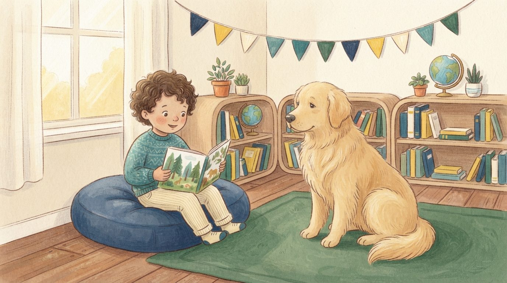

The Story Corner › Parents
Why reading to a dog helps shy readers (and how to try it at home)

Last week a Florida library system made local news for a simple idea: children reading picture books aloud to a dog. The Alachua County Library District runs a Read With a Dog programme in which elementary-aged children sit beside a certified therapy dog and read to it. Librarians and parents told WUFT News they have seen children grow more confident.
Why a dog? A dog never corrects a mispronounced word, never sighs and never looks at the clock. For a child who is still sounding out words, that patient, non-judging listener can take the pressure off.
What the research says
The evidence is encouraging but still small. A 2022 study in the Early Childhood Education Journal followed 24 Canadian children aged about 7 to 8 who needed extra reading support. Each child spent eight weeks reading to a dog and eight weeks reading to an adult, about 15 minutes a week. Oral reading and comprehension improved in both programmes, so the dog was not magic. But the children were noticeably more enthusiastic about the dog sessions, and only the dog sessions were described as calm. Parents and teachers saw better attitudes to reading after both.
An earlier UC Davis project found similar gains in reading fluency among children who read to rescue dogs each week. Even so, researchers are careful: a reading dog builds comfort and motivation, while skills still come from teaching and practice.
How to bring the idea home
- Ask your local library whether it hosts a reading-dog session.
- If you have a calm family pet, invite your child to read a short book to it. Five to ten minutes is plenty.
- No pet? A favourite stuffed animal works too. Let your child be the teacher who shows the pictures and reads the story.
- Choose easy, familiar books for these sessions. The goal is fluency and fun, not a challenge.
- Stay nearby but quiet. Resist correcting every slip; praise the effort afterwards.
- Younger children (3 to 5) can 'read' by retelling a story from the pictures. That counts too.
Tonight, set out a cushion, a teddy or the family dog, and a book your child already knows well. Ask: Can you read this one to Teddy? Then just listen.
Sources

The story of Prophet Nuh and the Great Ark, told with warmth for young children: patience, faith and kindness.
See the book